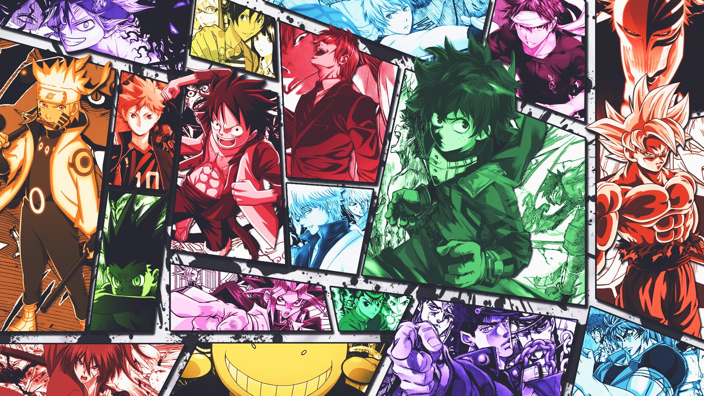

Anime is a distinctive style of animation that originated in Japan and has grown into one of the most influential storytelling mediums in the world. Unlike many Western animated productions, anime spans nearly every genre imaginable, from lighthearted comedies to intense psychological dramas. It is created for audiences of all ages, with shows tailored specifically for children, teenagers, and adults alike. The medium is known for its expressive art style, often featuring characters with large, emotive eyes and vibrant hairstyles. Many anime series are adapted from manga, which are Japanese comic books that often serve as the original source material. One of anime's greatest strengths is its willingness to explore complex themes such as mortality, identity, and morality. Series like Death Note challenge viewers to question the nature of justice and the consequences of absolute power. Other shows, like Frieren: Beyond Journey's End, take a quieter approach, focusing on grief, memory, and the passage of time. Action-oriented series such as Fullmetal Alchemist: Brotherhood combine thrilling battles with philosophical questions about sacrifice and redemption. Comedy anime like Gintama often blend absurd humor with unexpectedly emotional storytelling. This genre-blending is one of the reasons anime resonates with such a wide audience. Fans often form deep emotional connections to characters due to the medium's focus on personal growth and internal struggle. Long-running series can span hundreds of episodes, allowing for incredibly detailed character development over time. The music in anime, particularly opening and ending theme songs, plays a major role in setting the tone for each series. Voice acting, known as seiyuu work in Japan, is highly respected and often elevates a character's emotional impact. Streaming platforms like Crunchyroll and Netflix have made anime more accessible internationally than ever before. Isekai, a genre where characters are transported to another world, has become especially popular in recent years. Anime films, particularly those directed by Hayao Miyazaki, have received international critical acclaim and major awards. Fandom communities online continue to analyze, theorize, and celebrate their favorite series long after they've concluded. Ultimately, anime's ability to blend stunning visuals with deeply human storytelling is what keeps audiences coming back for more.